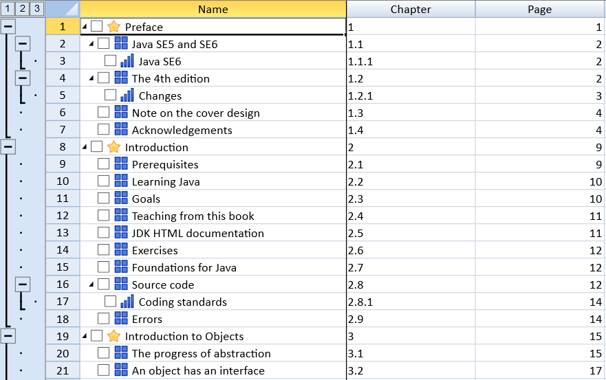

Outline columns in SpreadJS refers to indenting text in the columns to create a tree-like structure in a spreadsheet for better organization of data.
This feature is useful particularly when you want to add hierarchial relationships between rows and built-in expand and collapse user interface in a spreadsheet. Also, outlining columns can be of great help when you need to create project plan tasks and project plan sub-task hierarchy, financial statements and bills of material documents while working with large amounts of data lying in spreadsheets.
Users can outline columns in a worksheet while also adding check boxes and images along with collapse and expand icons.
The following image displays an outline column with collapse and expand icons, check boxes, images, and row outlines.

You can implement the collapse and expand icons in your worksheet by using the showRowOutline method. The levels in the tree structure correspond to the number of indentations.
You can also customize the images by level, show custom indicator, show checkbox and set maxlevel using outlineColumn.options.
This example shows how to indent the columns and add images and check boxes.
| JavaScript |
Copy Code
|
|---|---|
| var rowCount = 38; var colCount = 10; activeSheet.setColumnCount(colCount); activeSheet.setRowCount(rowCount); activeSheet.setColumnWidth(0, 310); activeSheet.setColumnWidth(1, 150); activeSheet.setColumnWidth(2, 150); activeSheet.frozenColumnCount(1); activeSheet.setValue(0, 0, "Name", GC.Spread.Sheets.SheetArea.colHeader); activeSheet.setValue(0, 1, "Chapter", GC.Spread.Sheets.SheetArea.colHeader); activeSheet.setValue(0, 2, "Page", GC.Spread.Sheets.SheetArea.colHeader); var commands = [ {name: 'Preface', chapter: '1', page: 1, indent: 0}, {name: 'Java SE5 and SE6', chapter: '1.1', page: 2, indent: 1}, {name: 'Java SE6', chapter: '1.1.1', page: 2, indent: 2}, {name: 'The 4th edition', chapter: '1.2', page: 2, indent: 1}, {name: 'Changes', chapter: '1.2.1', page: 3, indent: 2}, {name: 'Note on the cover design', chapter: '1.3', page: 4, indent: 1}, {name: 'Acknowledgements', chapter: '1.4', page: 4, indent: 1}, {name: 'Introduction', chapter: '2', page: 9, indent: 0}, {name: 'Prerequisites', chapter: '2.1', page: 9, indent: 1}, {name: 'Learning Java', chapter: '2.2', page: 10, indent: 1}, {name: 'Goals', chapter: '2.3', page: 10, indent: 1}, {name: 'Teaching from this book', chapter: '2.4', page: 11, indent: 1}, {name: 'JDK HTML documentation', chapter: '2.5', page: 11, indent: 1}, {name: 'Exercises', chapter: '2.6', page: 12, indent: 1}, {name: 'Foundations for Java', chapter: '2.7', page: 12, indent: 1}, {name: 'Source code', chapter: '2.8', page: 12, indent: 1}, {name: 'Coding standards', chapter: '2.8.1', page: 14, indent: 2}, {name: 'Errors', chapter: '2.9', page: 14, indent: 1}, {name: 'Introduction to Objects', chapter: '3', page: 15, indent: 0}, {name: 'The progress of abstraction', chapter: '3.1', page: 15, indent: 1}, {name: 'An object has an interface', chapter: '3.2', page: 17, indent: 1}, {name: 'An object provides services', chapter: '3.3', page: 18, indent: 1}, {name: 'The hidden implementation', chapter: '3.4', page: 19, indent: 1}, {name: 'Reusing the implementation', chapter: '3.5', page: 20, indent: 1}, {name: 'Inheritance', chapter: '3.6', page: 21, indent: 1}, {name: 'Is-a vs. is-like-a relationships', chapter: '3.6.1', page: 24, indent: 2}, {name: 'Interchangeable objects with polymorphism', chapter: '3.7', page: 25, indent: 1}, {name: 'The singly rooted hierarchy', chapter: '3.8', page: 28, indent: 1}, {name: 'Containers', chapter: '3.9', page: 28, indent: 1}, {name: 'Parameterized types (Generics)', chapter: '3.10', page: 29, indent: 1}, {name: 'Object creation & lifetime', chapter: '3.11', page: 30, indent: 1}, {name: 'Exception handling: dealing with errors', chapter: '3.12', page: 31, indent: 1}, {name: 'Concurrent programming', chapter: '3.13', page: 32, indent: 1}, {name: 'Java and the Internet', chapter: '3.14', page: 33, indent: 1}, {name: 'What is the Web?', chapter: '3.14.1', page: 33, indent: 2}, {name: 'Client-side programming', chapter: '3.14.2', page: 34, indent: 2}, {name: 'Server-side programming', chapter: '3.14.3', page: 38, indent: 2}, {name: 'Summary', chapter: '3.15', page: 38, indent: 1}, ]; for (var r = 0; r < commands.length; r++) { activeSheet.setValue(r, 0, commands[r]['name']); activeSheet.setValue(r, 1, commands[r]['chapter']); activeSheet.setValue(r, 2, commands[r]['page']); activeSheet.getRange(r, 0, 1, 1).textIndent(commands[r].indent); } activeSheet.outlineColumn.options({ columnIndex: 0, showImage: true, showCheckBox: true, images: ['star2.png', 'box4.png', 'rating4.png'], maxLevel: 2 }); activeSheet.showRowOutline(true); spread.invalidateLayout(); spread.repaint(); |
|
Note: This feature has the following limitations: